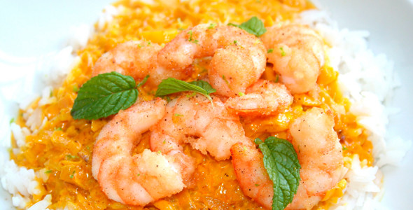

Comidas de la Costa
|  | ||
| Langostinos | Aji de Gallina |
Descripción
Hoy en día cuando un visitante o incluso un peruano se sientan a degustar alguno de los platos peruanos, quizá no sabe que está experimentando el resultado de una fascinante evolución de comidas y culturas. Con la llegada de los españoles se introdujo a esta parte de américa nuevas especies de animales, frutas y plantas. La cocina peruana representa una simbiosis de culturas culinarias. No sólo tiene hondas raíces pre incas, incas y coloniales hispanas, sino también que a lo largo de su historia ha incorporado estilos gastronómicos mulatos, europeos y orientales. La cocina costeña está constituida por una variedad de platos y especies entre las cuales se encuentran: La cocina marina y la cocina criolla. Perú es uno de los principales productores y exportadores de harina de pescado para a alimentación animal en el mundo. Su riqueza en peces, fauna y flora marinas son enormes, se encuentran tipos de animales o plantas que solo se dan en sus aguas. También hay que destacar sus riquezas de agua dulce que se encuentran principalmente en el río Amazonas y sus afluentes lagos, tales como el Titicaca.
Cada región costera, diferente en fauna y flora, adapta su cocina de acuerdo a los productos de sus aguas. El chupe de camarón; plato originario y típico del departamento de Arequipa, es uno de los platos más refinados de la costa peruana. Se trata de una sopa espesa a base de pescado y camarones, así como también papas, leche y ají. En el Perú existen variedades de chupes, como: Chupe de habas, Chupe de Zapallo, Chupe de Olluquito, etc. Los choritos a la chalaca son un aperitivo popular en épocas de verano. La cocina costeña cuenta con más de 250 postres tradicionales desde el siglo XIX, esta gran variedad se ha originado principalmente en las ciudades costeras desde la época del Virreinato del Perú, como el suspiro a la limeña, los picarones, el turrón, la mazamorra morada, entre otros. Entre los principales platos de la comida costeña tenemos: Ají de gallina, carapulcra, escabeche de pollo, arroz con pollo, tacu tacu, arroz con pato, cau cau, lomo saltado; entre otros. Por otra parte, existe un plato hibrido muy popular en la costa del país, especialmente en la zona centro, llamado simplemente “combinado”. Consiste en una porción de Papa a la huancaína con tallarines guisados (aderezo de zanahoria, tomate y cebolla) y Ceviche. Cabe resaltar que el combinado se le puede decir a cualquier plato que resulte ser poco de otros platos, ya que en Perú contamos con muy buenos platos para combinar.